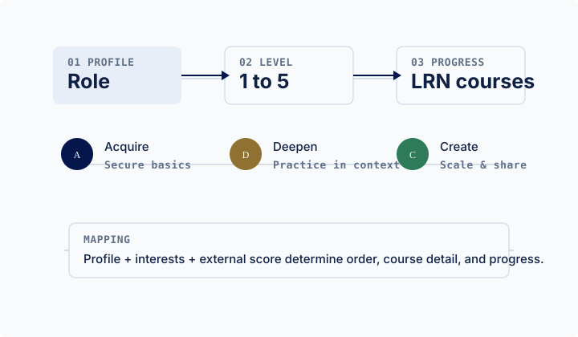

AI-Kurse nach Level
Das Self-Assessment kommt von außen als Level 1 bis 5. Diese Seite übersetzt Profil, Interessen und Level in LRN-Kurse, Subkurse und echte Curriculum-Lessons aus dem vorhandenen Kursbestand.
Externer Score: 1-5
XLSX: LRN-Kursliste
Curriculum: kuratiertes Mapping

Kurscockpit
1/5
Level setzen, um Kursreihenfolge und Fortschritt zu berechnen.